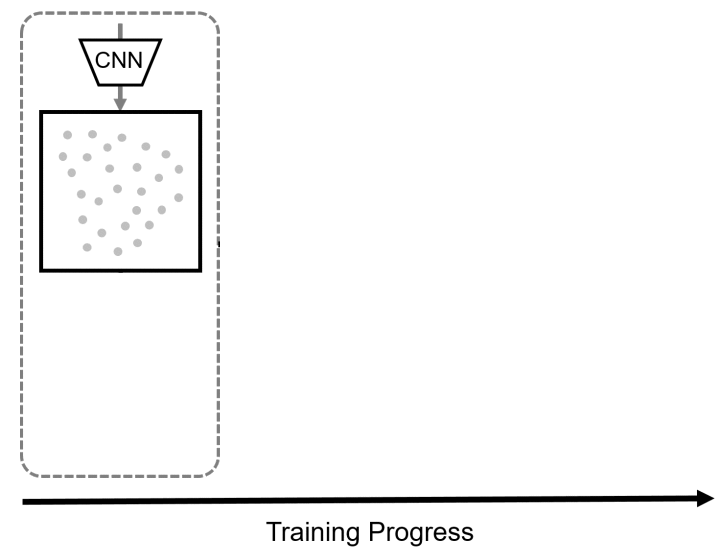
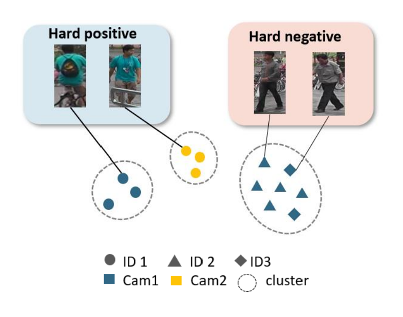
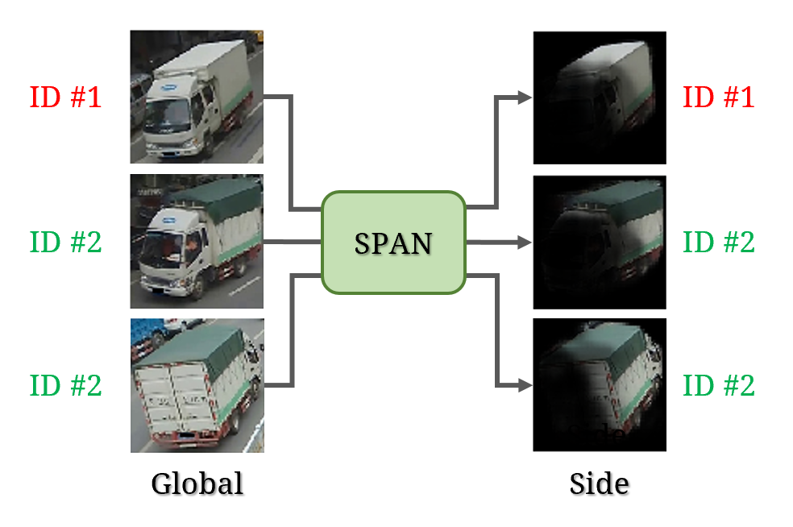
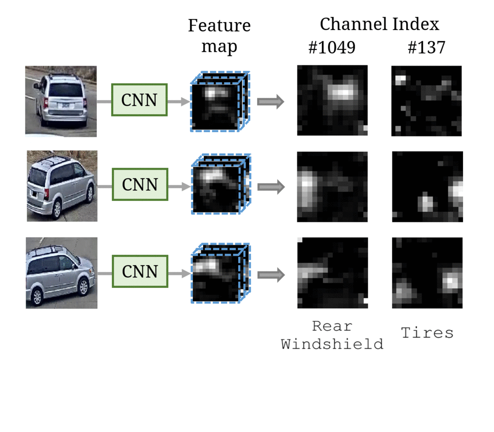
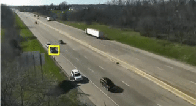
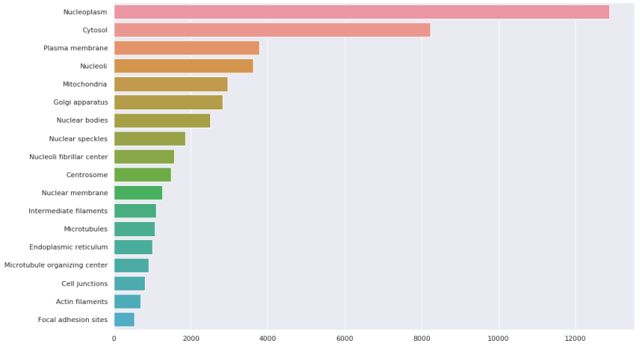
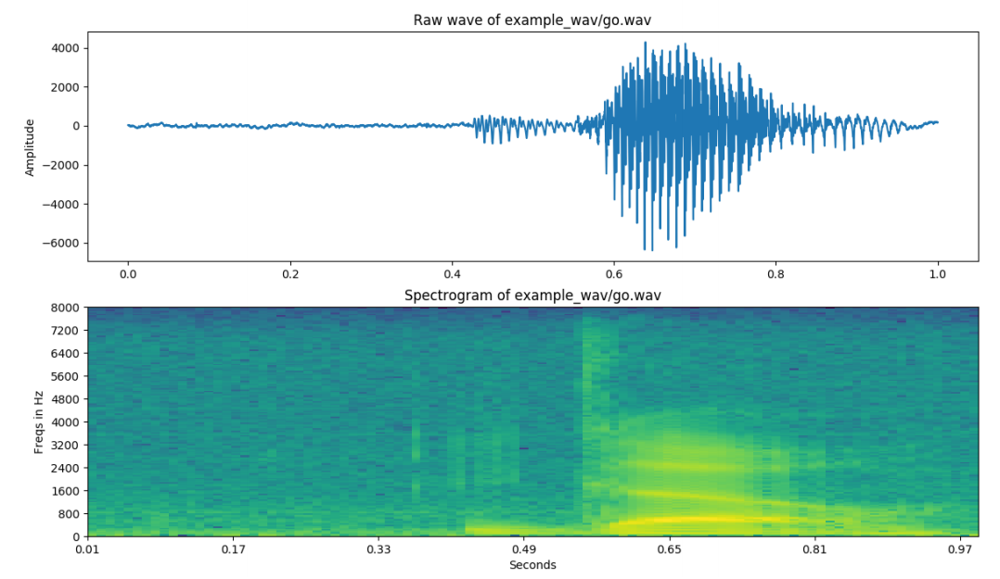
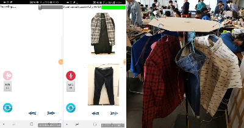
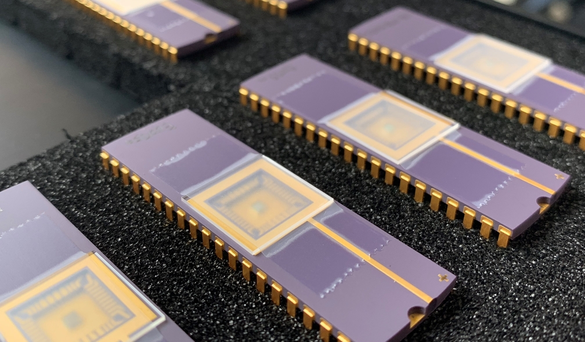
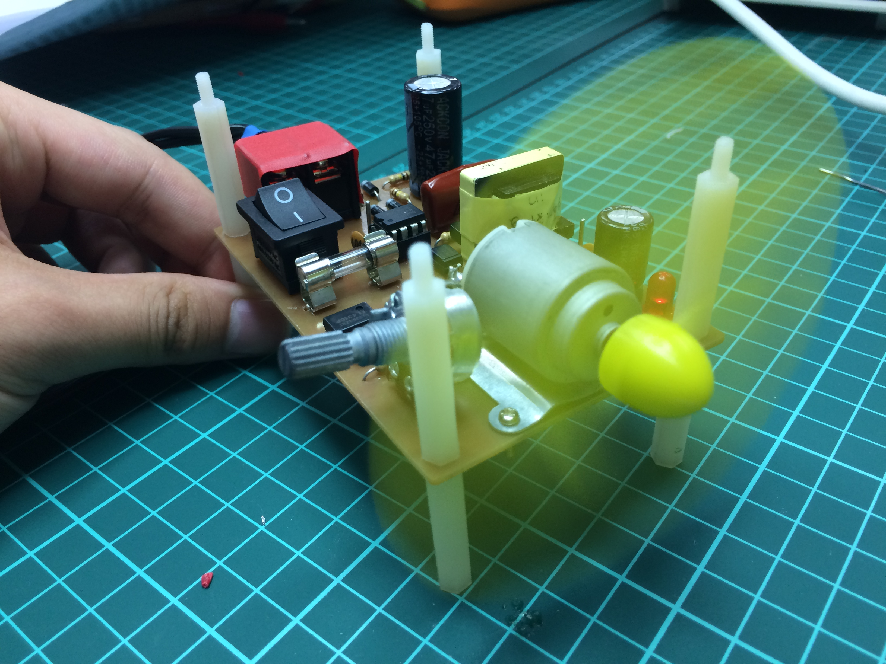

Biography
Timeline
Ph.D. Student @ UC Merced
Electrical Engineering and Computer Science
Supervisor: Prof. Ming-Hsuan Yang
2019 Sep. - 2022 March
Master Student @ NTU
Graduate Institute of Electronics Engineering
Primarily focused on:
Vehicle / Person Re-identification
Scene Text Detection and Recognition
See publications and projects.
Primarily focused on:
Vehicle / Person Re-identification
Scene Text Detection and Recognition
See publications and projects.
Supervisor: Prof. Shao-Yi Chien, Prof. Chu-Song Chen
2019 July - Aug.
Software Engineer Internship @ MediaTek
Explored a deep-learning algorithm for video encoding.
2017 July - Aug.
Software Developer Internship @ ITRI
Developed a software tool to simulate the force analysis.
2015 Sep. - 2019 June
Undergraduate Student @ NTU
Department of Electrical Engineering
Primarily focused on:
Integrated Circuit (IC) Design
Power Supply Circuit Implementation
See projects.
Primarily focused on:
Integrated Circuit (IC) Design
Power Supply Circuit Implementation
See projects.
1996
He was Born
Selected Publications

Incremental False Negative Detection for Contrastive Learning
In this work, we highlight the unfavorable effect from false negatives for self-supervised contrastive learning. To address the issue, we introduce IFND. Following the training process, when the embedding space becomes more semantically structural, IFND would incrementally detect more reliable false negatives and explicitly remove them during contrastive learning.
International Conference on Learning Representations (ICLR), 2022

Hard Samples Rectification for Unsupervised Cross-domain Person Re-identification
This paper proposes HSR which contains two parts: (1) an inter-camera mining method to recognize a person under different views (hard positive), and (2) a part-based homogeneity technique to discriminate different persons but with similar appearance (hard negative).
International Conference on Image Processing (ICIP), 2021

Orientation-aware Vehicle Re-identification with Semantics-guided Part Attention Network
In this paper, we propose SPAN to predict the spatial attention map for each vehicle view given only image-level label for training. We also introduce a novel distance metric emphasizing on the difference in co-occurrence vehicle views. Our method shows comparably superior performance in both the task of re-identification and the quality of generated attention maps.
European Conference on Computer Vision (ECCV), 2020
[Oral, acceptance rate: 2%]
[Oral, acceptance rate: 2%]

Viewpoint-Aware Channel-Wise Attentive Network for Vehicle Re-Identification
In this work, we propose VCAM to enable our framework channel-wisely reweighing the importance of each feature map according to the viewpoint of input vehicle image. By the aid of VCAM, we obtain promising results on 2020 AI City Challenge. We also explore the interpretability of how VCAM actually improves the performance.
Computer Vision and Pattern Recognition (CVPR) Workshops, 2020
Experiences & Awards
Reviewer
-
Serve as a reviewer for:
- Conferences: CVPR 2022, ICCV 2021
- Journals: IEEE T-ITS, Neurocomputing
Teaching Assistant
-
NTU EEE5053: Computer Vision (Spring 2021)
- Design algorithm problems and provide test cases and solutions.
- Set an online discussion platform and a weekly TA time to deal with students' problems.
- Write a code to automatically judge students' assignments.
International Awards
- Intel and NTU IoX Center Scholarship / Publication and Registration Grants for CVPR and ECCV / 2020-2021
- Oral Paper (2% acceptance rate) / European Conference on Computer Vision (ECCV) / 2020
- 3rd place (out of 334 teams from 44 countries) / CVPR Workshop: 2019 AI City Challenge (hosted by NVIDIA) / 2019
- Top 13% / International Kaggle Competition: Human Protein Atlas Image Classification / 2019
Domestic Awards
- Honorary Member (top 3% in college) / Phi Tau Phi Scholastic Honor Society / 2022
- Valedictorian / Department of Electrical Engineering, National Taiwan University / 2019
- 4-time Presidential Award (top 5% in department) / National Taiwan University / 2015-2019
- 2nd place / Deep Learning for Computer Vision: Final Project Contest / 2019
- 4th place (out of 200+ students) / Data Structure and Programming: Final Project Contest (hosted by Cadence) / 2018
Selected Projects

Dense Contrastive Pre-training for Scene Text Recognition (2021)
Built a large-scale unlabeled scene text dataset which contains around 8 million word boxes. The word boxes are extracted from YouTube video captured in 300 metropolises around the world and contain more than 30 languages. We then introduced a novel dense contrastive learning framework to pre-train a strong model on the proposed dataset for scene text recognition.

Vehicle Re-identification & Traffic Anomaly Detection System (2019)
Designed a system which can match vehicle images of same identity captured from different cameras and can also detect anomalies, such as lane violation, illegal U-turns and wrong-direction driving, etc. Got promising ranking AI City Challenges and the paper was accepted for publication.

International Kaggle Competition: Human Protein Atlas Image Classification (2019)
The objective of this competition is to develop models capable of classifying mixed patterns of proteins in microscope images. To solve the problem of multi-label classification on 27 highly imbalanced classes, we proposed an algorithm with AdaBoost and ensemble technique to cope with imbalanced dataset and ranked 1st in class / 279th in the world.

Speech Recognition System (2019)
Built a complete speech processing system to classify the command type for the given speech clip (in wav file). The whole system mainly includes three steps: transformation from a raw speech signal into spectrogram, computation of 39-dim MFCC, and then classification of command type by a CNN model.

Speago: Voice Control Outfit Recommendation System (2017)
Implemented a smart closet which is controlled by an Android app and would automatically pick up the recommended outfit based on the weather, temperature and the voice command of the user.
{kind=link}

Integrated Circuit Design: from Software to Hardware Development (2017)
In this project, we experienced the complete process of IC development, which mainly includes five steps: software design, RTL implementation, synthesis (to Gate-level), placement and routing, and finally taping out our custom chip. We also executed corresponding verifications for the intermediate and finally products after each step.
{kind=link}

Rectifier (2017)
Designed a rectifier which can transfer the 110V AC input to 0~2.5V DC output and drive the mini fan with controllable rotation speed. In this project, we went through the circuit design and printed circuit board (PCB) making and verification.
Top